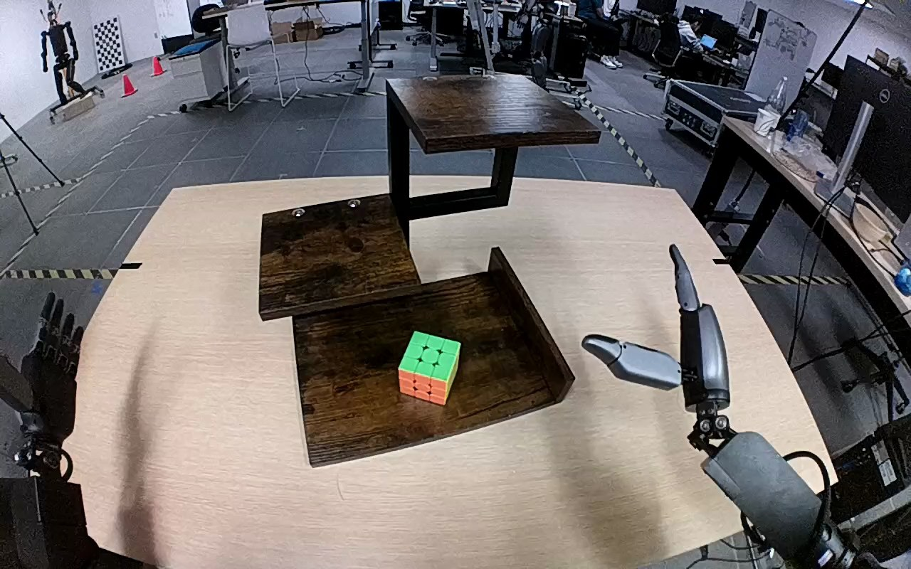

NVIDIA GR1 · 80
Video 80

Visual review action_review.json
{
"prompt_protocol": "humanoid_action_v1",
"prompt_provenance": "visually_authored_from_video_and_initial_frame",
"reviewed_contact_sheets": [
"sheet_001.jpg"
],
"inspected_frame_stride": 2,
"inspected_sampled_frame_count": 60,
"initial_scene": "Robot-facing first-person view of a dark wooden three-tier stand. A green-top, orange-front puzzle cube rests on the lowest tier. The right forearm and open hand enter from the lower right; the left forearm and open hand remain at the lower left.",
"observed_sequence": [
{
"start_frame": 0,
"end_frame": 16,
"action": "Cube remains on bottom tier; right hand is open beside the tier; left hand is open and idle.",
"confidence": "high"
},
{
"start_frame": 17,
"end_frame": 36,
"action": "Right arm reaches toward cube with hand open, bringing thumb and fingers to opposing sides.",
"confidence": "high"
},
{
"start_frame": 37,
"end_frame": 63,
"action": "Right fingers and thumb close around cube, securing it while it remains near bottom-tier surface.",
"confidence": "high"
},
{
"start_frame": 64,
"end_frame": 89,
"action": "Right hand lifts cube from bottom tier and raises it toward top tier; left hand remains clear.",
"confidence": "high"
},
{
"start_frame": 90,
"end_frame": 112,
"action": "Right hand carries cube above the upper shelf, briefly near the top image boundary, then positions it over the shelf.",
"confidence": "high"
},
{
"start_frame": 113,
"end_frame": 119,
"action": "Right hand lowers the cube onto top shelf; cube briefly tilts during settling and ends upright on shelf. Hand remains positioned around/front of cube; no hand withdrawal is shown.",
"confidence": "high"
}
],
"arm_hand_roles": {
"right": "Active hand reaches, closes around cube, lifts, carries upward, and lowers cube onto upper tier. Thumb remains visible across the cube front/top vicinity at ending.",
"left": "Open idle hand stays beside lower-left table edge without cube or shelf contact.",
"coordination": "Single-hand manipulation; no bimanual support or transfer."
},
"anatomical_side_evidence": {
"evidence": "Forward robot-facing camera view places the two forearms emerging from lower body-relative sides. Active forearm is on robot right and its thumb opposes fingers toward the medial/image-left side of the palm; idle opposite hand enters from robot left. No facing robot reverses image anatomy. This visual arm/hand configuration agrees with source right-hand annotation.",
"confidence": "high",
"limitation": "Torso and shoulders are outside this camera view, so naming is established from forward-view forearm positions and hand orientation rather than a visible shoulder."
},
"terminal_state": "Cube stands upright with green face uppermost on top shelf. Right hand is still immediately around the cube, thumb spanning its front/upper vicinity. Left hand remains idle. Full hand separation/withdrawal is not shown.",
"uncertainties": [
"Final finger contacts behind the cube are partly occluded; whether grasp is fully released cannot be established, though the cube bottom is visibly on the upper shelf."
],
"annotation_discrepancies": [],
"evidence_frame_indices": [
0,
30,
52,
68,
92,
106,
110,
112,
114,
116,
118,
119
],
"selected_execution_status": "uncertain",
"execution_status_reason": "Cube transfer to the requested top tier is visible, but complete grasp release and independent stable placement after hand withdrawal are not shown.",
"inspection_coverage": {
"complete_video_sampled": true,
"source_frames": 120,
"sampled_frames": 60,
"source_initial_png_viewed_native": true,
"native_transition_and_final_frames_viewed": [
30,
52,
68,
92,
106,
110,
112,
114,
116,
118,
119
]
},
"video_id": "80",
"dataset": "NVIDIA_GR1_100",
"dedicated_review_agent": "review_gr1_80",
"review_source_video": "NVIDIA_GR1_100/80/original/original.mp4",
"source_frame_count": 120,
"source_fps": 20.0,
"native_detail_frames": [
30,
52,
68,
92,
106,
110,
112,
114,
116,
118,
119
],
"world_model_prompt": "The robot uses its right hand to grasp the colored puzzle cube on the bottom shelf and lift it clear. It carries the cube upward to the top shelf and lowers it onto the surface. The cube ends upright on the top shelf, with the right hand still positioned around it. Keep the camera fixed; preserve robot geometry, physically valid joint motion, and normal gripper opening and closing.",
"original_task_instruction": "Use the right hand to pick up ruik's cube from bottom dark wooden three tier shelf to top dark wooden three tier shelf.",
"selected_segment": {
"start_frame": 0,
"end_frame_exclusive": 120,
"reason": "Complete original single-task reference; no cropping or trimming requested."
},
"source_video_sha256": "1476a6868bea3c73713dc51ba6f6935c18213f9b10249c6ac63c78ac2c642f29",
"review_completed_at": "2026-10-13T18:33:48.686062+00:00"
}